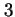
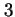
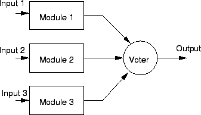
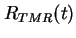
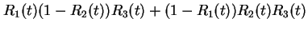
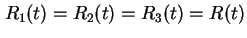
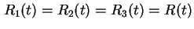
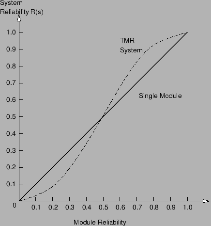
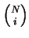

Next: หัวข้อสรุป
Up: การหาค่าความน่าเชื่อถือโดยการจำลองแบบแจกแจงการทำงาน
Previous: ระบบขนาน
Contents
Index
ระบบ  ใน
ใน  เป็นการเขียนรูปทั่วไปของการวิเคราะห์แบบขนาน ระบบขนานต้องการเพียงหนึ่งโมดูลในการที่จะให้ระบบทำงานได้ปกติ สำหรับระบบ ใน จำนวนโมดูลที่ต้องการ ในการที่จะให้ระบบสามารถทำงานได้เท่ากับ จากทั้งหมด โมดูล
ตัวอย่างของระบบ ใน ได้แก่ระบบ TMR ที่ต้องการอย่างต่ำสองโมดูลทำงาน ในการที่จะให้ระบบทำงาน จึงถูกเรียกอีกอย่างหนึ่งว่า ระบบ
เป็นการเขียนรูปทั่วไปของการวิเคราะห์แบบขนาน ระบบขนานต้องการเพียงหนึ่งโมดูลในการที่จะให้ระบบทำงานได้ปกติ สำหรับระบบ ใน จำนวนโมดูลที่ต้องการ ในการที่จะให้ระบบสามารถทำงานได้เท่ากับ จากทั้งหมด โมดูล
ตัวอย่างของระบบ ใน ได้แก่ระบบ TMR ที่ต้องการอย่างต่ำสองโมดูลทำงาน ในการที่จะให้ระบบทำงาน จึงถูกเรียกอีกอย่างหนึ่งว่า ระบบ  ใน 
เราสามารถแจกแจงรูปแบบของระบบ TMR ที่สามารถทำงานได้ดังต่อไปนี้ สมมุติให้ระบบ TMR ประกอบด้วยโมดูล 1, 2, 3 ที่ต่อเชื่อมกับตัวโหวต ดังแสดงในรูป 10.5
ใน 
เราสามารถแจกแจงรูปแบบของระบบ TMR ที่สามารถทำงานได้ดังต่อไปนี้ สมมุติให้ระบบ TMR ประกอบด้วยโมดูล 1, 2, 3 ที่ต่อเชื่อมกับตัวโหวต ดังแสดงในรูป 10.5
Figure 10.5:
ระบบ TMR
|

|
ระบบจะสามารถทำงานได้ ตราบเท่าที่มีอย่างน้อยสองโมดูลทำงานได้ปกติ ถ้าไม่คำนึงถึงค่าความน่าเชื่อถือของตัวโหวต เราจะได้ค่าความน่าเชื่อถือของระบบดังต่อไปนี้
|  |
 |
 |
|
| |
|
 |
(10.46) |
เมื่อ  เป็นค่าความน่าเชื่อถือของโมดูล
เป็นค่าความน่าเชื่อถือของโมดูล  ถ้าความน่าเชื่อถือของแต่ละโมดูลเท่ากันหมด
 เราจะได้ค่าความน่าเชื่อถือของระบบเป็น
ถ้าความน่าเชื่อถือของแต่ละโมดูลเท่ากันหมด
 เราจะได้ค่าความน่าเชื่อถือของระบบเป็น
ในรูป 10.6 แสดงความสัมพันธ์ระหว่าง
 กับ
กับ  จะพบว่าค่าความน่าเชื่อถือของระบบ TMR และ ระบบ Simplex มีจุดตัดของกราฟ จุดตัดดังกล่าวสามารถหาได้โดยสมการดังต่อไปนี้
จะพบว่าค่าความน่าเชื่อถือของระบบ TMR และ ระบบ Simplex มีจุดตัดของกราฟ จุดตัดดังกล่าวสามารถหาได้โดยสมการดังต่อไปนี้
Figure 10.6:
ความสัมพันธ์ระหว่าง ค่าความน่าเชื่อถือของระบบ TMR กับ ค่าความน่าเชื่อถือของโมดูล (
กับ )
|

|
หรือ
ซึ่งจะได้สมการ
 |
(10.50) |
จุดตัดของสมการอยู่ที่ ความน่าเชื่อถือของโมดูลเท่ากับ 0.5 นั้นหมายถึงค่าความน่าเชื่อถือของโมดูลมีค่าน้อยกว่า 0.5 ระบบที่ประกอบด้วย หนึ่งโมดูลจะสามารถทำงานได้ โดยมีค่าความน่าเชื่อถือที่ดีกว่าระบบ TMR ระบบ TMR จะมีค่าความน่าเชื่อถือสูงกว่า ก็ต่อเมื่อ ค่าความน่าเชื่อถือของระบบมีค่ามากกว่า 0.5 เมื่อค่าความน่าเชื่อถือของโมดูลมีค่าเข้าใกล้หนึ่ง ค่าความน่าเชื่อถือของระบบ TMR กับ ค่าความน่าเชื่อถือของโมดูลจะมีค่าใกล้เคียงกัน
ระบบ M ใน N สามารถเขียนเป็นสมการในรูปทั่วไปได้ ดังต่อไปนี้
 |
(10.51) |
โดยที่ค่า  นิยามเท่ากับ
ตัวอย่างเช่นระบบ TMR สามารถหาค่าความน่าเชื่อถือเท่ากับ
ซึ่งจะได้
Next: หัวข้อสรุป
Up: การหาค่าความน่าเชื่อถือโดยการจำลองแบบแจกแจงการทำงาน
Previous: ระบบขนาน
Contents
Index
Vara Varavithya
2002-03-09